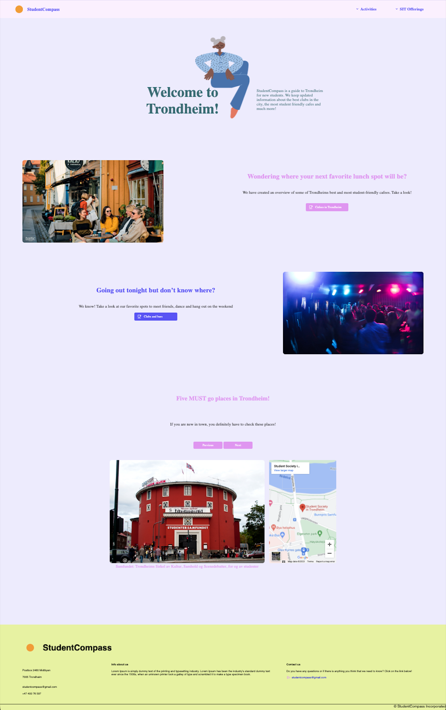
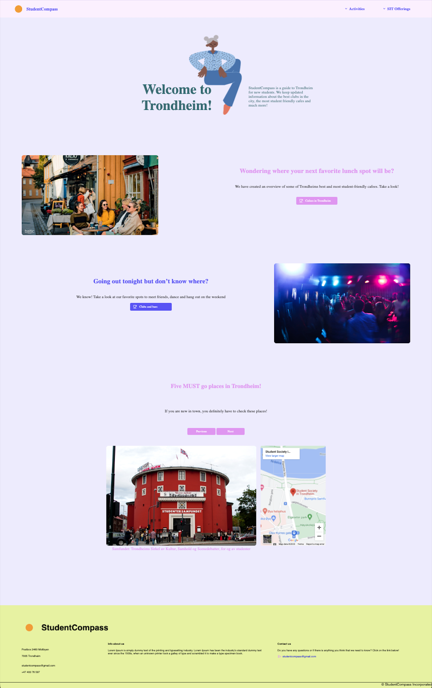

3. Changes
Colors
On all of the pages, there are some slight changes in the colors that are behind the photos and on the corresponding text. The changes however are negligble and did not affect the website to deviate from the orignal design.
Fonts
On all the pages, a different font than what is in the prototype has been used. This was done as for aesthetic reasons, as well as to make the development easier.
Width of page
In some places, the width of the page was not a round number in Figma, but when coding the website we used round numbers. Example: 499px in Figma → 500px on the website.
Landing page
In the prototype made in Figma, the landing page did not have slideshow of various locations in Trondheim with corresponding embedded google maps locations. This was later decided to be implemented to fulfill the requirements of neccessary javascript functions in our webpage. See figure below:
 

Changes in Javascript functions
- Javascript function that opens mails when you click on the contact us button was set as a requirement in P2. In P3, this mail function was solved using only html and css.
- Sticky navigation bar using javascript was not defined in P2, but was implemented in P3.